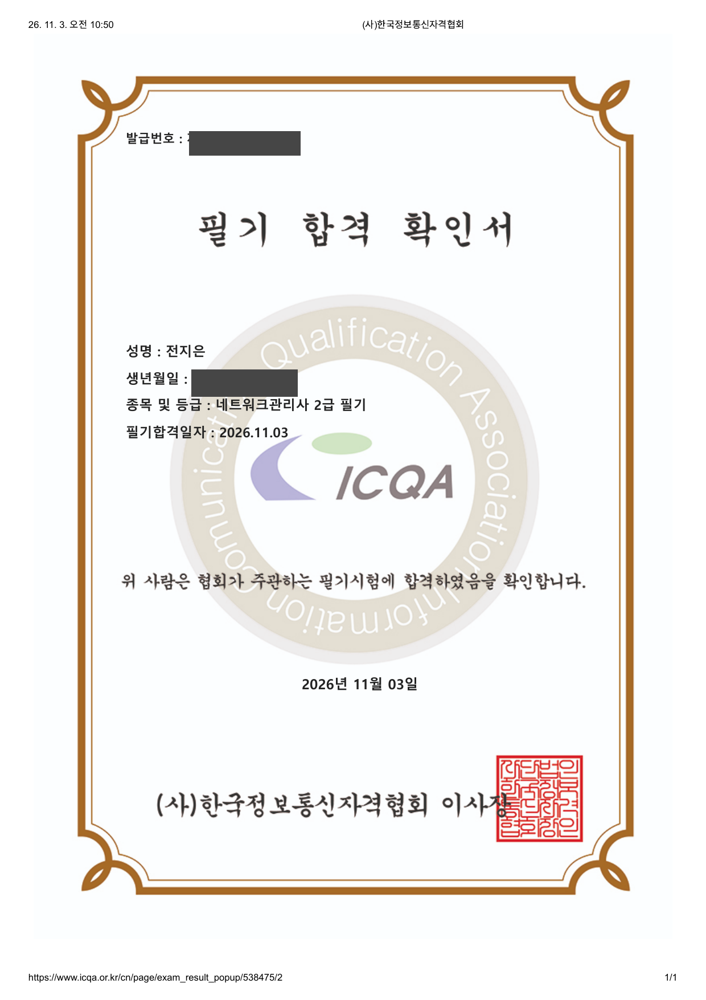

한국정보통신자격협회(ICQA) · 합격일 2026.11.03
2026년 10월 26일부터 30일까지 하루에 한 회차씩, 각 연도 기출문제를 순서대로 풀었습니다. 평균 점수가 68점에서 91.3점으로 올랐습니다.
| 날짜 (기출 연도) | 10/26 2025년 | 10/27 2024년 | 10/28 2023년 | 10/29 2022년 | 10/30 2026년 |
|---|---|---|---|---|---|
| 평균 점수 | 68 | 78 | 83 | 86.5 | 91.3 |
| TCP/IP | 75% | 82% | 90% | 93% | 90% |
| 네트워크 일반 | 80% | 65% | 80% | 90% | 97% |
| NOS | 54% | 76% | 81% | 81% | 89% |
| 운용기기 | 70% | 95% | 75% | 80% | 93% |
출처: 직접 작성한 기출 오답노트
실제 필기시험에 합격했습니다. 발급번호와 생년월일은 가렸습니다.
